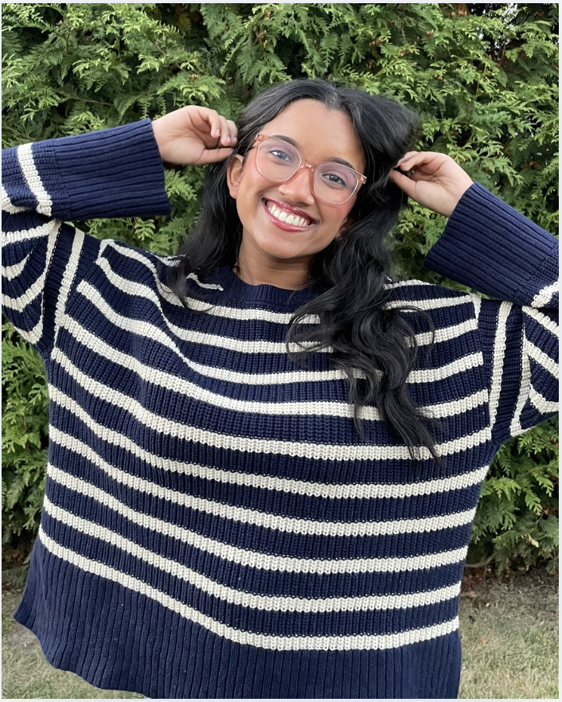
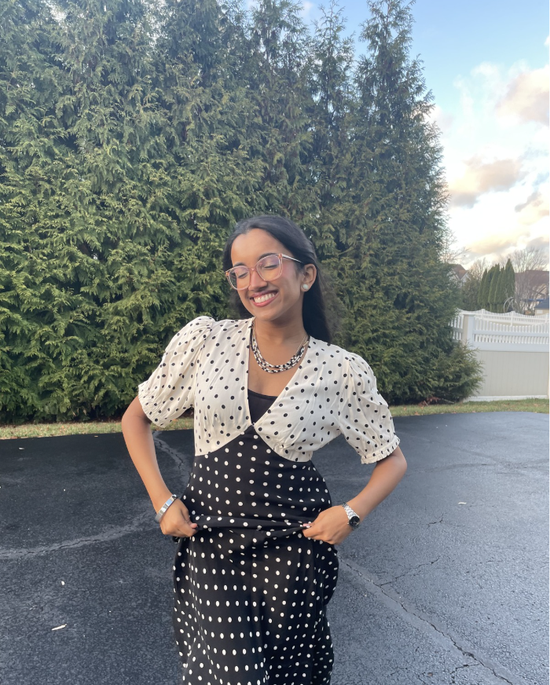
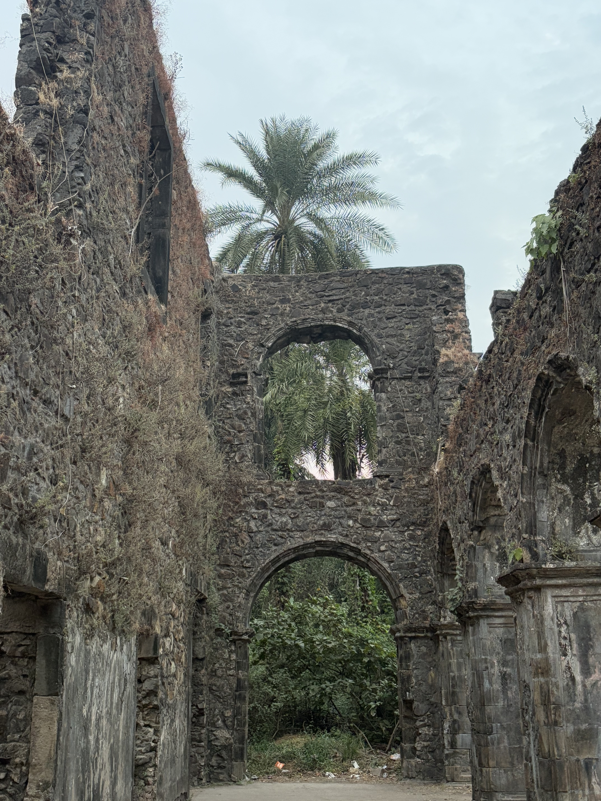
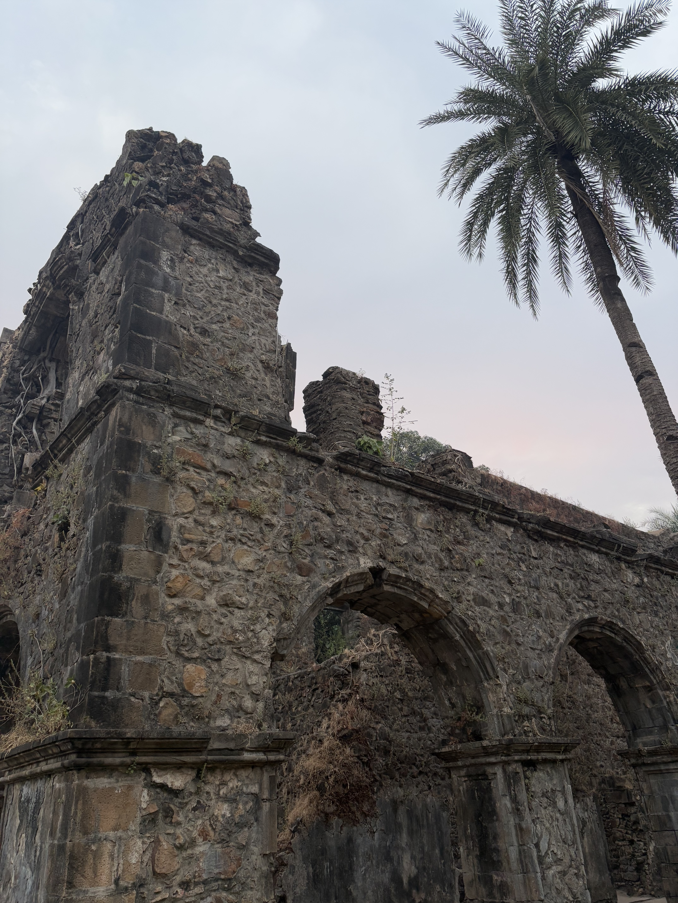
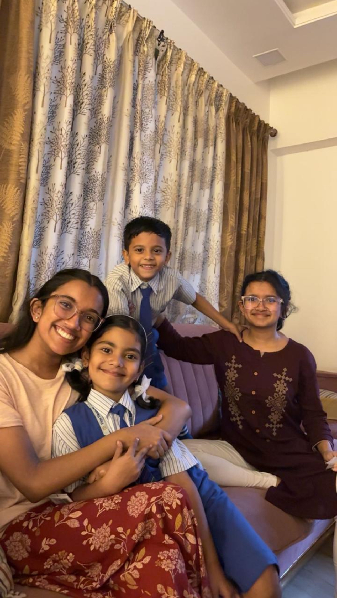
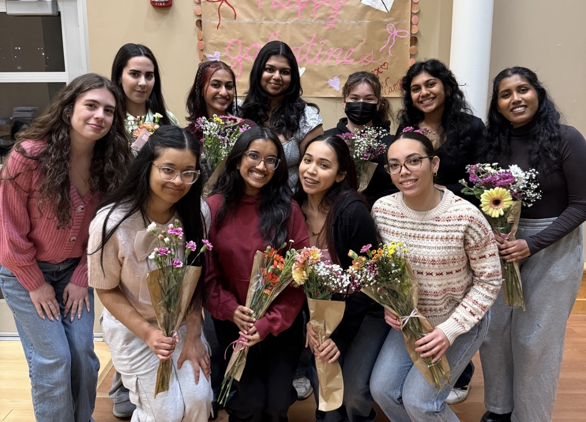

Hi there!
I'm Ananya Almeida, welcome to my little corner of the internet 🧸☕️💌
To get to know me better, click on the tabs →
I'm Ananya Almeida, welcome to my little corner of the internet 🧸☕️💌
To get to know me better, click on the tabs →
Hi, I'm Ananya Almeida! I'm an undergraduate junior at Rutgers University New-Brunswick double majoring in Data Science and Statistics, with a minor in Biological Sciences. Go Scarlet Knights!


I've practically spent my whole life in New Jersey and I wouldn't have it any other way. If you drive 40 minutes, you hit the beach. If you drive an hour, you're in NYC. Best state if you ask me!
If you take a flight to Mumbai, and drive an hour north, you arrive at my village: Manickpur. It's known for the ruins of the 500 year old Vasai Fort from the Portuguese Colonial era, hence why my last name, Almeida, is Portuguese.




I am earning my Bachelor of Science in Data Science (on the Computer Science track) and Statistics. I am also minoring in Biological Sciences.
My expected graduation date is May 2028, I'm going to be a leap year graduate!
Data Structures, Data Wrangling & Management with R, Differential Equations, Discrete Mathematics, Multivariable Calculus, Principles of Information and Data Management, General Biology, General Physics, General Chemistry
I'm particularly interested in applying data science and machine learning to healthcare, pharmaceutical research, and clinical decision-making. My coursework has provided a foundation in statistics, programming, and data analysis, which I continue to build through independent projects and research.
During Summer 2026, I worked as a Data Analytics and Systems Intern with ASCENDtials, a non-profit based in San Diego.
For this role, I engineered an R-based data pipeline using tidyverse packages (ggplot2, dplyr, stringr) to clean, transform, and analyze multi-source stakeholder datasets and communicate findings through data visualizations and data modeling.
I'm actively searching for internship opportunities that apply data science concepts and statistical analysis to meaningful initiatives to solve real-world problems.
I developed a reproducible data pipeline in R with SQL queries and APIs to ingest CDC WONDER datasets and analyze the relationship between median household income and cancer incidence rates across 50 states.
I executed advanced data wrangling with tidyverse and sf to merge health outcomes with geographical data, creating interactive visualizations for regional disparity assessment.
I implemented statistical testing and residual analysis (linear regression) to investigate outliers, identifying specific geographic regions where health outcomes deviated significantly from economic predictions.
I'm architecturing an AI-driven web application using Python and Streamlit to ingest long-form news media, parse text semantic structures, and run automated large language model evaluations.
I've integrated a native REST API connection to Google Gemini using low-level HTTP POST requests to extract key insights from long-form news articles.
I also engineered an automated web scraping pipeline using Beautiful Soup featuring a dual-stream fallback engine that programmatically sanitizes raw HTML streams, handles user-agent spoofing, and extracts Open Graph metadata to handle search queries for real-time web discovery APIs with a 100% data-delivery success rate.
I serve on the e-boards for three student organizations at Rutgers: the Rutgers Data Science Organization, Rutgers Women in Data Science, and Rutgers Her Campus!
I am on the corporate outreach team where I coordinate outreach initiatives with 10+ companies per week for a 500+ member organization.
I am the Events Coordinator where I collaborate with a team to develop and implement events focused on data science and professional development.
As the Social Media Coordinator, I post weekly on our social platforms and leverage analytics to identify high-performing content buckets, such as Reels and games. We sustained an average of 42k+ views per month over a 7-month period and successfully reversed a winter dip into a 58k-view growth milestone within 30 days

The number one thing I've consistently loved is writing. I've kept journals for the last 10+ years of my life (it's what inspired the layout for my website). The reason why I joined Her Campus my freshman year was so that I could exercise my writing skills in a different way!
I'm currently reading The Winners by Fredrik Backman, the last book in the Beartown trilogy. I'm excited to see what Backman does with these characters!
A book I'll always recommend, is Rohinton Mistry's A Fine Balance; it's a harrowing story of four people who stumble into each other's lives.
You can follow what I'm reading on my Goodreads!
Alongside writing, I love digital storytelling through video editing and production! Here are a few snapshot projects I have put together (unmute for the full experience):
Let's connect! Reach out via email, LinkedIn, or check out my live GitHub profile.
ananya.almeida@gmail.com